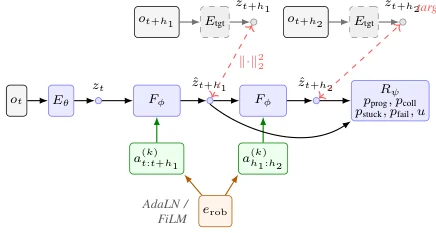
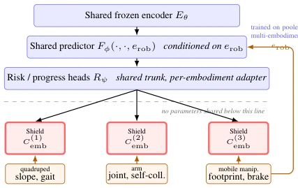
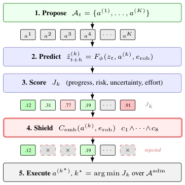
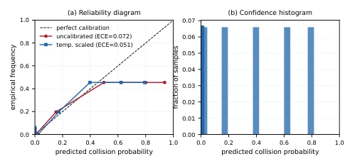
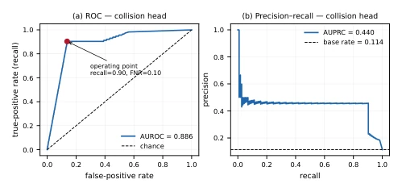

This paper attempts to arm 'overconfident' end-to-end VLA policies (such as RT-2, OpenVLA) with a 'bulletproof vest', the logic is clear: let JEPA be responsible for 'fortune-telling' (predicting risks), let traditional models be responsible for 'law enforcement' (hard shielding). The highlight lies in its extremely pragmatic admission: no matter how powerful a learned model is, it cannot guarantee safety; true safety must come from that non-drifting, physics-rule-based hard shield (Shield). This 'prediction responsible for ranking, shielding responsible for saving lives' architectural design is indeed much more reliable in deployment than relying solely on model confidence. But the complaints are also obvious: experiments were all run in LIBERO-Long simulation, real-world deployment only tested latency not effects, and statistical significance nearly failed when comparing 'reranking' effects (p-value not small enough), indicating that when sample size is insufficient, this fancy 'prediction + shielding' combination punch might only be slightly better than simple shielding, or even just psychological comfort. Additionally, taking 'calibration' as a core contribution is a bit risky, after all, is calibrated probability really more effective than hard rules in the face of real-world physical collisions? Worth doubting.
Current embodied AI faces a core contradiction: Vision-Language-Action (VLA) policies have strong generalization capabilities, can handle complex semantic tasks, but lack safety guarantees during execution, prone to making actions leading to collisions or deadlocks [8, 10, 20, 30]; while traditional model-based control (such as MPPI, CEM) can strictly satisfy kinematic constraints, it does not understand semantic task progress and has poor generalization [33, 37]. Existing solutions often sacrifice one for the other: either like DreamAvoid which only uses world models to 'dream' and avoid risks in critical stages, lacking hard constraints [13]; or like VeriSpace which relies on 3D reasoning, but lacks calibration of risk probabilities [39]. More critically, existing systems lack an architecture that clearly decouples 'learned risk ranking' from 'hard physical constraints', leading to either unreliable safety (models may misjudge) or too low efficiency (fully relying on conservative rules). This paper aims to resolve this split, proposing a framework that can utilize JEPA to predict task progress and risks, while ensuring absolute safety through hard shielding, specifically targeting deployment needs for Heterogeneous Robots.
The overall architecture adopts a 'Propose-Predict-Rank-Shield' cascade process. First, a mixed proposer (VLA sampling, MPPI/CEM optimization, skill library) generates K candidate action segments. Next, the action-conditioned JEPA world model (Action-Conditioned JEPA) uses a frozen visual encoder to extract features, combined with robot embodiment embedding (erob), performing multi-step forward rollouts (Rollout) for each candidate action in latent space. Prediction heads (Risk & Progress Heads) output task progress, collision probability, deadlock probability, and uncertainty. Subsequently, the system calculates scalar score Jk to rank candidates. The most critical step is 'hard shielding' (Safety Shield), which executes deterministic predicate Cemb based on embodiment-specific geometric and kinematic models (such as stop distance, joint limits, terrain slope, etc.), directly eliminating all candidate items violating constraints, regardless of how high their predicted score is. If no legal candidates remain after shielding, the 'Fallback Ladder' is triggered: safe stop, rollback, replanning, or requesting human takeover. Innovations lie in: 1) Clearly separating 'learned ranking' from 'hard admission', ensuring safety does not depend on model parameters; 2) Introducing explicit calibration loss (Calibration Loss) and temperature scaling, making risk probabilities have interpretable confidence; 3) Designing a mechanism for heterogeneous robots to share representation but have independent shielding, adapting to different platforms.

Figure 2: Action-conditioned JEPA. The frozen encoder is applied once to ot; the predictor Fϕ rolls the latent forward autoregressively under the candidate action chunk, conditioned on the embodiment embedding erob through AdaLN/FiLM. Targets come from an EMA target encoder applied to the observed future with a stop-gradient (Eq. (7)). No pixel decoder is used at any point. Risk and progress heads read the rollout, not the raw observation.

Figure 4: What is shared and what is not. Representation and prediction are shared across embodiments and conditioned on erob, following the cross-embodiment transfer evidence in [31]. Safety is not shared: stopping distance, footprint, joint limits and traversable slope are per-platform specifications, so each embodiment carries its own deterministic shield. Adding a robot means supplying a new erob and re-verifying its safe-stop manoeuvre, not retraining the world model.

Figure 3: Decision pipeline for one control step. Scoring and shielding are separate stages in a fixed order. The learned score (step 3) produces a total order over candidates; the shield (step 4) produces a subset. Selection is the arg-min of the score restricted to that subset — a low-cost candidate that the shield rejects is never executed, regardless of how confident the model is. The illustrated scores are schematic, not measurements.
Experiments were mainly conducted in the LIBERO-Long simulation environment, evaluating prediction performance and closed-loop task success rate. Datasets include LIBERO (main) and DROID (transfer). Baselines include pure VLA policy, rule shielding only, JEPA reranking only, and the complete framework proposed in this paper. Main metrics focus on False Negative Rate (FNR, core safety metric) of collision prediction, Expected Calibration Error (ECE), and closed-loop success rate. Results show that compared to the baseline using only model shielding, the complete framework improved closed-loop success rate by 7% (p≈0.014), collision false negative rate dropped from 0.21 to 0.14. Calibration loss significantly reduced ECE (3.5x), proving probability predictions are more credible. Ablation experiments show that removing calibration loss does not affect AUROC but severely damages probability usability. However, compared to the baseline with only reranking (no shielding), the complete framework only improved by 3%, and it was statistically insignificant, implying that with the sample size, the gain brought by 'reranking' is limited. Real-world deployment only tested edge computing latency, without physical interaction verification.

Figure 6: Reliability diagram and confidence histogram, LIBERO seed 0 (n=1000). Produced by scripts/make_ illustrative_figures.py from real per-example Level- 2 predictions (results/level2_libero_seed0.csv). It shows an over-confident risk head (red) whose ranking is unchanged but whose probabilities are unusable as thresholds, and the same head after temperature scaling [15] (blue). ECE here (0.072 before, 0.052 after scaling) is broadly consistent with, but not identical to, Table 1’s 3-seed-mean calibration-loss ablation (0.14 vs. 0.04) — see Sec. 6 for why the two are related but not the same comparison.

Figure 7: ROC and precision–recall for the collision head, LIBERO seed 0 (n=1000). Same data as Fig. 6 — AUROC here (0.887) is consistent with Table 1’s 3-seed mean (0.88). The marked operating point is the fixed-recall threshold at which false-negative rate is reported, so that all methods in Table 1 are compared at equal caution rather than at each method’s own most flattering threshold; the FNR value here (0.097) is not directly comparable to the table because the threshold is chosen and evaluated on the same held-out split rather than separate validation/test splits (see Sec. 6 for why). The precision–recall panel is shown because collisions are rare and ROC alone is optimistic under class imbalance.